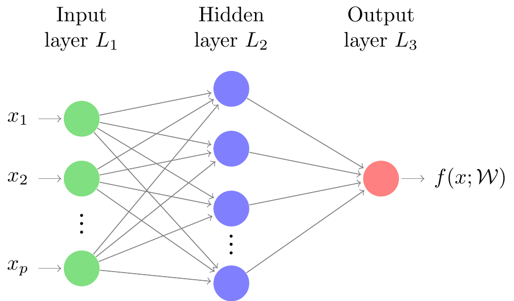
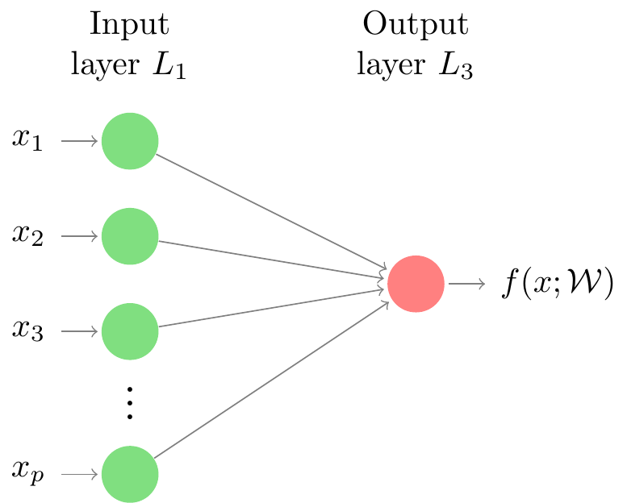
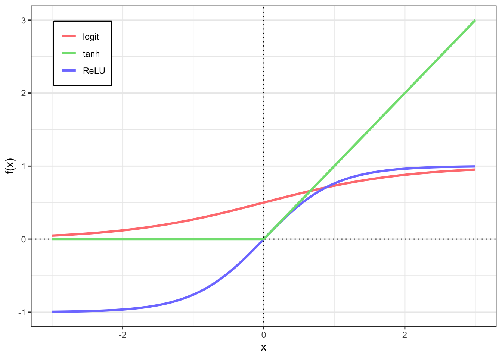

Intro
The idea behind the Neural Networks models, as its nomenclature suggests, is to mimic the way human brain learns to execute of some tasks. Some works in the literature (Cheng and Titterington (1994), Stern (1996), Warner and Misra (1996)) attribute of the first attempts to build a “Neural Network emulator” to McCulloch and Pitts (1943). The popularity of this method in the past decades was held down by the computation intensive calculations needed for such procedures. However, the computation resources advances in the last few years allied to the algorithmic nature of Neural Networks have contributed to the adoption of the methodology by computer scientists. These days, this models are very popular in the industry and are applied to several interesting applications such as speech recognition, image classification, and automatic text translation.
Neural Network Regression
A neural network is a highly parametrized model that, provided we have enough data, can approximate any functional relationship between a set of features1 and a response variable (Efron and Hastie (2016), pages 151-152). Although there are several possible structures for neural networks, for this post we are going to consider only the feed-forward2 neural networks. In order to explain how these neural networks are designed, let’s consider its graphical representation (see Figure 1). We have vertices, which are called a units (or neurons), ordered horizontally by layers. An edge coming from one vertex can only be connected to vertices associated with “higher” layers. These connections represent a information flow from left to right (hence, the name feed-forward), where each unit computed by 1) giving weights to each of its inputs, 2) calculating the dot product between weights and inputs, 3) adding a constant( usually referred to as bias) to it, and, finally, 4) applying an element-wise activation function to it. These activation functions are used to establish non-linear relationships between units.
The number of hidden layers as well as the number of units associated with every layer can both be regard as tuning parameters. The design and architecture of a neural network is a complex task. In summary, when having a single hidden layer, the number of units associated with the hidden layer determines the number of parameters associated with the model. Efron and Hastie (2016) suggest that, under this scenario, it is better to consider several units for the hidden layer and use some kind of regularization to avoid overfitting. Penalizations analogous to the Ridge and Lasso penalty for linear models are often used in the regularization context for neural networks (Hastie, Tibshirani, and Wainwright (2015), pages 210-211).
An important remark regarding the neural network models is that they are “pure prediction algorithms”. That is, these models are focused only on prediction, neglecting the estimation, as pointed by Efron (2020). The strategy is simple and consists in searching for high predictive accuracy. That being said, these algorithms make no assumption on the probability distribution of the data and, as one of the consequences of losing these assumptions, it is not possible to make interval predictions or to calculate confidence intervals for the “estimated” parameters.
Single neuron feed-forward networks
A single neuron feed-forward network does not possess any hidden layer in its structure. The absence of hidden layers makes these models resemble the statistical models we are most used to, like, for example, the linear regression and logistic regression. By analyzing the graphical representation of a single layer feed-forward network (Figure 2), it is easy to see that by taking the identity as the activation function, the functional relationship between and considered by the neural network is equivalent to the one used for the general linear model. Considering the same representation, if we take (sigmoid function, according to the neural network models literature) and , then the neural network provides the same relationship between and as the one used by the logistic regression.

Although the functional relationship between and assumed by the single layer neural network coincides with some statistical models, we cannot promptly claim an equivalence between models because the way the neural networks learn, that is estimates, the weights can lead to different solutions depending on the loss and cost functions selected, we are going to talk more about these functions in the next section.
Activation functions
Activation functions are applied in every “Layer connection” in neural network models. Suppose, for example, we have a design matrix $\mathbf{X} \in {\rm I\!R}^{n \times p}$, and a response variable . Then, given appropriate choices of the (one for each layer connection), the mathematical model, for a single observation, behind the neural network, can be written in a vectorial notation as follows where $\mathbf{W}^{(k - 1)} \in {\rm I\!R}^{m_{k - 1} \times m_{k}}$ is the matrix of weights that go from from the layer to the layer , $\mathbf{a}^{(k)} \in {\rm I\!R}^{m_k \times m_{k + 1}}$ matrix of units at layer , and is a (element-wise) activation function used at the layer . Note that, when , then . Observe that is the number of units in the layer and, consequently, for the input and output layers, respectively, we have and .
From this example, it is clear that we can apply different activation functions when connecting different layers. Nevertheless, the activation for one layer is the same along all of its units.
Although, theoretically, there exists no restriction on which functions to use as activation function, we want these functions to be at least one time differentiable. This is due to the fact that most of the methods used to find the optimal weights are based on gradients. Another aspect to be considered when choosing an activation function is the domain of the output variable . That is, if , we want an activation function that maps real values to the interval. In summary, for the output layer, we use a activation function that makes predictions on the same domain as the output variable, while, for hidden layers, we have no restrictions on the activation functions, besides the ones already mentioned.
Some commonly used link functions are the , or sigmoid, function, defined as the hyperbolic tangent function, referred to as , Note that the is mapping from the real line to the interval. The Rectified Linear Unit (ReLU) is also a popular choice and is defined as the main advantage of this function is a cheap to compute gradient. A different version of the ReLU called leaky ReLU is also quite popular, its definition is given as follows
These are only some examples of commonly used activation functions and they are illustrated in Figure 3. The user does need to be restrict to these options since there are several other functions implemented in the software available to compute neural networks. However, if you want to use a activation function that is not implemented yet, you may have to implement your own version for the algorithm.

Although there are no restrictions on the functions used as activation functions in the hidden layers (besides being differentiable functions), it is not advisable to use the identity function because it implies a waste of computational power. This is due to the fact that using a linear function in a hidden layer, makes the units from that layer a linear combination of the units from the previous layer. To make this clear, let’s prove that a Neural Network model with a single hidden layer collapses to a Generalized Linear Model when the identity function is used as the activation function.
Suppose a -dimensional vector is assumed to follow a distribution , where belongs to the exponential family of distributions. Then, given a design matrix $\mathbf{X} \in {\rm I\!R}^{n \times p}$, the Generalized Linear Model for is composed by the random component, given by the probability density function associated with the distribution , the systematic component, defined by and a (canonical) link function such that Once we estimate the parameters , we have
Define now our Neural Network model having a single hidden layer with units. The activation function for the hidden layer is , that is, the same as the identity function. The weights we want to find are $\mathbf{W}^{(1)} \in {\rm I\!R}^{p \times 1}$, and $\mathbf{W}^{(2)} \in {\rm I\!R}^{M \times n}$. The activation function for the activation layer is the previously mentioned canonical link function. Finally, let the loss be the deviance residual associated with the distribution , and the cost function be the average of the losses. Then, the mathematical representation of the Neural Network becomes because the activation function for the hidden layer is the identity. Then, we have However, note that, by combining 3, 4, and 5 we get $$\begin{align*} \mathbf{y} & = g( \mathbf{\mathbf{z}^{(2)}} ) \\ & = g( \mathbf{a}^{(1)} \mathbf{W}^{(2)} ) \\ & = g( \mathbf{X} \underbrace{\mathbf{W}^{(1)} \mathbf{W}^{(2)}}_{{\rm I\!R}_{p \times 1}} ), \end{align*}$$ which yields to optimal weights (see Fitting a Neural Network and Backpropagation, for more information on how to fit a neural network model) satisfying $$ \underbrace{\mathbf{W}^{(1)} \mathbf{W}^{(2)}}_{{\rm I\!R}_{p \times 1}} = \hat{\boldsymbol{\beta}}, $$ where is the Maximum Likelihood Estimator for that can be obtained using the Iterative Reweighted Least Squares for the model defined by the probability density function associated with the distribution , the systematic component 1 and a (canonical) link function 2.
Cost functions
Whenever we want to fit a neural network to a dataset we need to specify a Cost function, which is usually based on loss functions. A loss function, in the context of Neural Network models, measures how far our predictions are from the true value . Examples of commonly used loss functions, for a single observation, are the mean square error loss and the binomial deviance defined, respectively, as and The loss function 6 is usually employed when the output (response) variable assumes continuous values, while the 7 is used for binary output variables.
After choosing an appropriate loss function, the cost function is defined as the average of the loss function over all the observation, that is where is a non-negative regularization term and is a tuning parameter.
In practice, we may have a regularization term for each layer, each one having its own . Some commonly used regularization terms are and where is the number of layers of our neural network model, and is the vector of weights from the units in the layer to the layer . Note that, these two regularization terms are analogous to the Ridge and Lasso penalizations, and they play the exact same role in neural networks as its analogous versions do for the linear models (Efron and Hastie 2016). Mixtures of these two regularization terms, as in the elastic net (Zou and Hastie 2005), are also common.
Fitting a Neural Network
Supposing a user has set the number of layers, units, an activation function and a loss function, to fit a neural network we seek the set of weights such that the cost function is minimized, that is Therefore, the neural network fit has turned into an optimization problem. The most common algorithm used to solve this optimization problem is the Backpropagation algorithm, which is described in the next section for a general situation.
Backpropagation
Backpropagation (or gradient descent) is the method used to find the weights which minimize the chosen cost and loss functions for a given neural network. It is an iterative algorithm that is guaranteed to converge whenever the cost function has a single local minima (Efron and Hastie 2016). However, even if the cost function does not have a single local minima, the algorithm works fairly well. The updates for a weight matrix, let’s say, is done as follows where is a tuning parameter called learning rate. The name backpropagation comes from the fact that the derivatives (or gradients) are computed according to something called a computation graph in a backward fashion. It is heavily based on the chain rule for differentiation.
Given initial values for the matrices, the method repeats the update rule 8 until convergence. Provided that the columns of the design matrix are rescaled to mean 0 and variance 1, Hastie, Tibshirani, and Friedman (2009) suggest the use of random starting values for the weights as uniform random variables on the interval .
Implementation
I created functions for the implementation of a Neural Network with a single hidden layer model for generic activation functions. The implementation considers the cost function defined as
The inputs for the implemented function are:
A design matrix , including the columns of ones for the intercept;
A column vector containing the response variable;
The number of units for the hidden layer;
The activation function for the hidden layer;
The activation function for the output layer;
A scalar for the learning rate ;
Two control parameters for the convergence of the algorithm. The maximum number of iterations allowed, and a relative error which controls when to stop the iteration algorithm.
The function returns a list of size 5. Its first element is the predicted vector for , the second contains the values of the cost function for each iteration of the algorithm. The third position of this list stores the weight matrices and , while the last two positions store the number of iterations until attain the convergence and a string indicating whether the algorithm converged or not, respectively.
See below the implementation of some activation functions (and their derivatives)
##--- activation functions and their derivatives ----
## ReLU
relu <- function(x) {
pmax(x, 0)
}
## derivative leaky ReLU
d_relu <- function(x) {
ifelse(x > 0, 1, 0)
}
## leaky ReLU
lrelu <- function(x) {
pmax(x * .01, x)
}
## derivative leaky ReLU
d_lrelu <- function(x) {
ifelse(x > 0, 1, .01)
}
## derivative tanh
d_tanh <- function(x) {
1 - (tanh(x)^2)
}
## derivative logit
d_logit <- function(x) {
plogis(x) * ( 1 - plogis(x) )
}
## derivative identity
d_ident <- function(x) {
pmax( -2 * abs(x), 1 )
}Now, let’s implement some helper functions to fit our neural network models. First, the cost function used in our examples is given by
## cost function
cost_f <- function(y, yhat) {
crossprod(yhat - y) / NROW(y)
}The implementation of the functions that will need to be executed at each step of the optimization algorithm are defined below. compute_nn computes the hidden layers given the matrix of covariates (or features) X, the list containing the the weights W associated to each layer connection, and two activation functions act_hidden and act_out for the hidden and output layers, respectively (this is a the implementation for a 2 layers network). The compute_grad function computes the gradient and needs some further information like y (the response variable), n the sample size, and the derivatives of the activation functions. update_aux and update_w are helper functions used to update the weights.
##--- functiosn to fit the neural network ----
## computing the forward step of the neural network
compute_nn <- function(X, W, act_hidden, act_out) {
Z <- vector(mode = "list", length = 2)
Z[[1]] <- X %*% W[[1]]
A <- act_hidden(Z[[1]])
Z[[2]] <- A %*% W[[2]]
return( list(y = act_out(Z[[2]]),
z = Z) )
}
## computing the gradient of the neural network
compute_grad <- function(y, X, W, act_hidden, act_out,
d1_hidden, d1_out, n) {
nn <- compute_nn(X, W, act_hidden, act_out)
aux_out <- (nn$y - y) * d1_out(nn$z[[2]])
aux_hid <- tcrossprod(aux_out, W[[2]]) *
d1_hidden(nn$z[[1]])
return(
list(crossprod(X, aux_hid) / n,
crossprod(act_hidden(nn$z[[1]]), aux_out) / n)
)
}
## aux function for updating W
update_aux <- function(w, dw, alpha) {
w - alpha * dw
}
## update the weights of a neural network
update_w <- function(W, alpha, y, X, act_hidden, act_out,
d1_hidden, d1_out, n) {
grad_w <- compute_grad(y, X, W, act_hidden, act_out,
d1_hidden, d1_out, n)
return( Map(f = update_aux, w = W,
dw = grad_w, alpha = alpha) )
}Finally, all these functions previously describer are used to build the fit_nn function (which is used to compute the optimal weights for the neural network). The alpha is the previously mentioned in this post, maxit and eps are parameters used in the optimization process. The first one stands for the maximum number of iterations to be used in the optimization process, while the second stand for the “optimization error”. That is, if, from one iteration to another, the change between the weights does not exceed eps, then we consider that the algorithm converged and a (maybe local) optimum has been found.
fit_nn <- function(y, X, hid_units,
act_hidden, act_out,
d1_hidden, d1_out,
alpha = .25,
maxit = 500L,
eps = 1e-05) {
m <- hid_units
p <- ncol(X)
N <- NROW(y)
W <- list(matrix(runif(m * p, -.75, .75),
ncol = m, nrow = p),
matrix(runif(m, -.75, .75), ncol = 1))
nn <- vector(mode = "list", length = maxit)
cost <- vector(mode = "numeric", length = maxit)
## initialiazing
nn[[1]] <- compute_nn(X, W, act_hidden, act_out)
cost[1] <- cost_f(y, nn[[1]]$y)
for( i in seq_len(maxit)[-1] ) {
W <- update_w(W, alpha, y, X,
act_hidden, act_out,
d1_hidden, d1_out,
n = N)
nn[[i]] <- compute_nn(X, W, act_hidden, act_out)
cost[i] <- cost_f(y, nn[[i]]$y)
if( abs(cost[i] - cost[i - 1]) < eps ) {
output <- list(nn = nn[[i - 1]],
cost = cost[1:(i - 1)],
W = W,
it = (i - 1),
conv = "yes")
break
}
}
if( i == maxit ) {
output <- list(yhat = nn[[maxit]]$y,
cost = cost[1:maxit],
W = W,
it = maxit,
conv = "no")
}
return(output)
}Having all these functions, we can play with some numerical examples!
Numerical Examples
Example 1: Equivalence between Neural Network and Linear Model
Consider a simulated dataset where where $\mathbf{X} \in {\rm I\!R}^{n \times 3}$, with the first column being the intercept term. To simulate the model we used . Additionally, suppose .
Considering the identity function as the activation function for both layers, the goal here is to show that the , where is the least squares solution for a linear model established as , and are the optimal weights according to the Neural Network fitted to the data, as proved in the subsection @ref(subsec:act).
Table 1 displays the results from the simulated example. The two different approaches have yielded the exactly same results. If we were to make predictions, the two methods would provide the same predicted values under these circumstances.
| 2.996 | 2.996 |
| 3.004 | 3.004 |
| 1.512 | 1.512 |
See below the code used on this example.
##--- numerical examples ----
##--- example 1 ----
set.seed(123)
n <- 2000
x1 <- rnorm(n)
x2 <- as.numeric( scale( rexp(n) ) )
y <- 3 + 3 * x1 + 1.5 * x2 + rnorm(n, sd = .5)
my_x <- cbind( rep(1, n), x1, x2 )
colnames(my_x) <- NULL
dt <- as.data.frame( cbind(y, my_x[, 2:3]) )
names(dt) <- c("y", "x1", "x2")
m <- 6
fit_1 <-
fit_nn(y = y, X = my_x,
hid_units = m,
act_hidden = identity,
act_out = identity,
d1_hidden = d_ident,
d1_out = d_ident,
alpha = .05,
maxit = 1000L,
eps = 1e-16)
beta_hat <- coef(lm(y ~ x1 + x2, data = dt))
tbl_1 <- as.data.frame(cbind(beta_hat,
fit_1$W[[1]] %*% fit_1$W[[2]]))
names(tbl_1) <- c("$\\hat{\\boldsymbol{\\beta}}$",
"$\\mathbf{W}^{(1)} \\mathbf{W}^{(2)}$")
rownames(tbl_1) <- NULLFinal Thoughts
The Neural Network Regression models are very interesting but certainly are not magical as it is sold in the market. By the end of the day, these models consist of simple linear algebra allied to the use of element-wise nonlinear functions and optimization algorithms. Speaking on optimization algorithm, the gradient descent looks like a fixed-point iteration algorithm. These kind of algorithms have the advantage of not need the second derivative of the functions, however their convergence can be slow. I believe that using different learning rates for different parameters could improve the speed on which the algorithm converges.
Although these models do not make any distributional assumption on the data, we can easily make it more suitable for certain distributions by working with the cost and activation functions on an appropriate fashion.
There are several variants of these models suited for different problems, like text and image classification, for example. The idea is the same, what changes is the way the researchers deal with the hidden layers. I think an interesting application is to try to use neural networks to estimate non-parametrically covariance matrices for spatial data.
References
Cheng, Bing, and D Michael Titterington. 1994. “Neural Networks: A Review from a Statistical Perspective.” Statistical Science, 2–30.
Efron, Bradley. 2020. “Prediction, Estimation, and Attribution.” Journal of the American Statistical Association 115 (530): 636–55.
Efron, Bradley, and Trevor Hastie. 2016. “Neural Networks and Deep Learning.” In Computer Age Statistical Inference: Algorithms, Evidence, and Data Science. Institute of Mathematical Statistics Monographs. Cambridge University Press. https://doi.org/10.1017/CBO9781316576533.019.
Hastie, Trevor, Robert Tibshirani, and Jerome Friedman. 2009. The Elements of Statistical Learning: Data Mining, Inference, and Prediction. Springer Science & Business Media.
Hastie, Trevor, Robert Tibshirani, and Martin Wainwright. 2015. Statistical Learning with Sparsity: The Lasso and Generalizations. CRC press.
McCulloch, W, and W Pitts. 1943. “A Logical Calculus of the Ideas Imminent in Nervous Activity.” Bulletin of Mathematical Biophisics 5: 115–33.
Stern, Hal S. 1996. “Neural Networks in Applied Statistics.” Technometrics 38 (3): 205–14.
Warner, Brad, and Manavendra Misra. 1996. “Understanding Neural Networks as Statistical Tools.” The American Statistician 50 (4): 284–93.
Zou, Hui, and Trevor Hastie. 2005. “Regularization and Variable Selection via the Elastic Net.” Journal of the Royal Statistical Society: Series B (Statistical Methodology) 67 (2): 301–20.
Footnotes
Citation
BibTeX citation:
@online{godoy2021,
author = {Godoy, Lucas},
title = {Estimating Regression Coefficients Using a {Neural} {Network}
(from Scratch)},
date = {2021-07-28},
url = {https://lcgodoy.me/posts/lmnet/2021-06-23-lmnnet.html},
langid = {en}
}
For attribution, please cite this work as:
Godoy, Lucas. 2021. “Estimating Regression Coefficients Using a
Neural Network (from Scratch).” July 28, 2021. https://lcgodoy.me/posts/lmnet/2021-06-23-lmnnet.html.